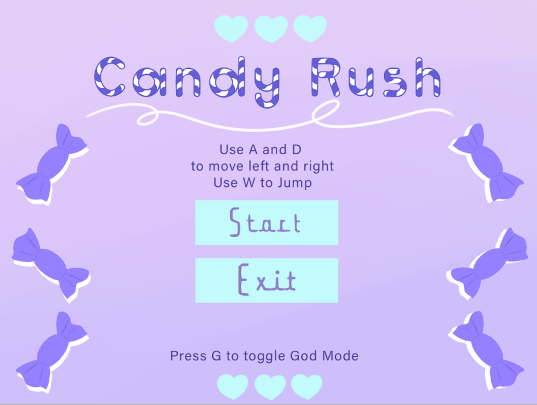
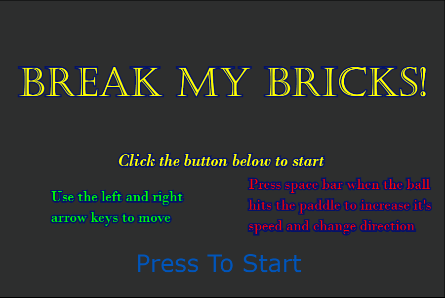
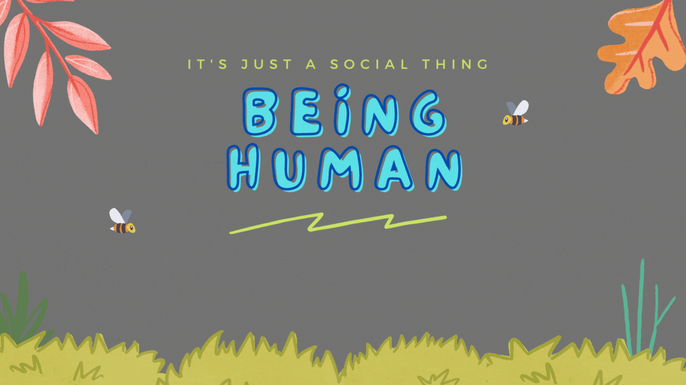
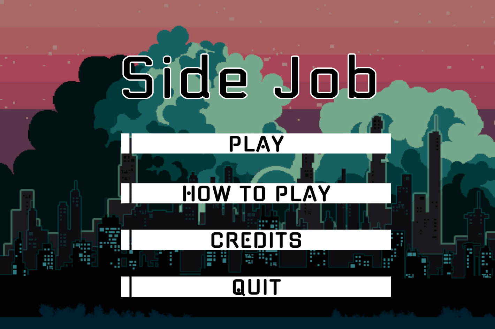

Candy Rush:
I worked as part of a team of 4 to create a game in monogame called Candy Rush. I acted as a lead designer for the game
and coded much of the core physics of the game as well as assisting in the implemntation of the animations and sound
effects used in the game. I also helped build many of the various other mechanics found in the game.
Candy Rush features a gummy bear as the main character as they work their way jumping up a vending machine. The player
must dodge pieces of candy as they fall down the screen while navigating past multiple platforms. Try to stay on your
toes while playing the game as the platforms also fall down.
Changeling:
I was a producer and UX designer for the VR game Changeling developed in Unreal Engine 4. I lead a team of game designers
to create a shippable demo of the game by Spring 2023. I helped to coordinate and run agile scrum methodologies as I ran
meetings and made game design decisions for the team in order to create an immersive vr experience.
Changeling has the player taking the role of Aurelia, a detective who has the ability to see the thoughts and memories
of anyone she touches. This gift has her as the last resort for a family that claims something is wrong with their baby.
As the player makes contact with each family member, you'll see through the lens of their hopes and fears what is left
of the baby.

Break My Bricks!:
A brick breaker game using PIXI.js. The game is a conventional arkanoid that introduces some more hidden mechanics that
add some depth and difficulty to the game. Time a spacebar press when the ball hits the paddle to increase the speed of
the ball and change it's direction. Make sure not to lose too much control over the ball as once it's gets fast enough,
it might become difficult to track. There are also multiple sound effects and music to accompany the game and to cheer
the player on during the game.

Being Human:
Being Human is a narrative text based game that follows the character Jay, an African American non-binary student
in high school. The game deals with subject matters involving racisim, transphobia, bigotry, and more. There are
multiple endings that can be acquired based on the choices the player makes.
Part of a team of 3, I largely layed out the foundation for this narrative based text game. The game was developed
in Twine, utilizing the Harlowe 3.3.3 library. There is a mixture of html, css, and javascript featured in the
back bones of the game. I primarily focused on the implementation of game mechanics and the general narrative as a
lead game designer.

Ethshar Arena:
Ethshar Arena is a 3~4 player card based battle game. Play as a team of magic users in the world of Ethshar
as you utilize your spells, demons, amulets, and other magic artifacts to take control of the game board and
win glory for your team.
As part of the development of Ethshar Arena, I was tasked as the art lead faced with making the design for
the cards and visuals for the game board as well. I also helped flesh out mechanics of the game and iterated upon
it with the feedback our team got from external playtests.

Side Job:
Side Job is a small 2d top down action game prototype inspired by the world of the Dresden Files and built in Unity. Play as a fellow magic
user, similar to that of Harry Dresden, and make your way through multiple levels, collecting evidence, shooting
and avoiding enemies, and managing the time you have left.
I was the art lead for this game. I created a modular level design that utilized unity's tilemaps and tile palettes
which allowed for easy creation of multiple levels for the game. I obtained many of the assets for the game
from itch.io which helped create a more uniform visual theme throughout the game. I was also responsible
for many of the UI elements such as the buttons, text fonts, icons and more.